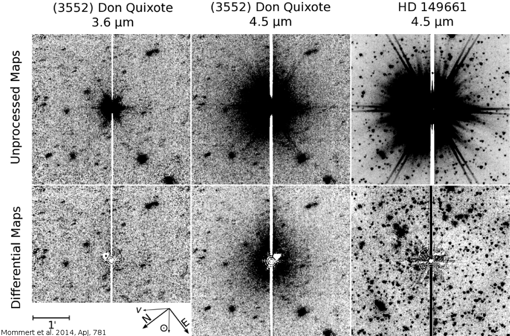
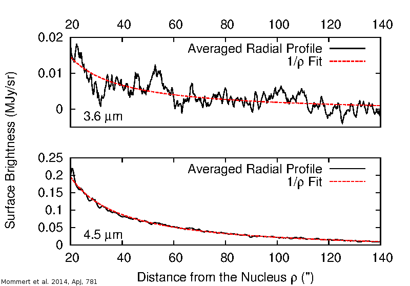

Part of the NEO population is considered to consist of so-called dead comets. Dead comets are comets that have spent a long time as NEOs and have been depleted their volatile inventories in numerous, close encounters with the Sun, i.e., they are extinct comets. They can be identified through their distinctive comet-like orbits and their low, comet-like albedos.
The dead comet archetype is NEO (3552) Don Quixote. We observed Don Quixote as part of the ExploreNEOs program, in which ~600 NEOs were observed to derive the diameters and albedos of these objects. Our observations at 3.6 and 4.5 µm were saturated because the target was brighter than expect, revealing something rather unexpected.
{kind=link}

The subtraction of the Spitzer IRAC point-spread-function (psf) from our observations show some kind of extended emission around the object at 4.5 µm, but not so at 3.6 µm. We went into some effort to show that the extended emission is not an image artifact, it is not a background source, not a latency effect, and not a result of the saturation of the object. The latter is obvious after applying the same psf-subtraction technique to a saturated image of an even brighter calibration star (HD 149661).
{kind=link}

The nature of the extended emission becomes clear after plotting the radial brightness distribution around the object. At 3.6 µm, the distribution is rather noisy and basically in agreement with a null result, whereas at 4.5 µm, the radial brightness distribution is clearly proportional to the reciprocal distance from the target center. This behavior is typical for cometary comae, consisting of optically thin dust and gas that is ejected from the surface as ices sublimate in the warming sunlight. After subtracting the model for a cometary coma from our observations, even a faint tail becomes obvious.

The fact that we observe cometary activity at 4.5 but not at 3.6 µm provides constraints on the composition of the coma. If significant amounts of dust would be ejected together with the gas, the emission would be visible in both bands, more likely so at 3.6 µm, which is not the case. The most likely explanation is emission from molecular bands: both CO and CO2 have molecular band emission lines that fall into the 4.5 µm bandpass, but not into the 3.6 µm bandpass. Both materials have been found in cometary spectra, but CO2 is usually more likely. The activity we find in Don Quixote is rather minute and comparable to the weakest activities found in active comets. Still, the fact that this object does show activity, which has not been discovered in 30 years after its discovery as an asteroid, is extraordinary.
Another interesting fact we could derive from its taxonomic classification as a D-type asteroid and meteorite analog material is that Don Quixote is likely to hold a large amount of water. Based on the diameter we derived (18.4 km), Don Quixote is likely to hold 100 billion tons of water, which is about the same amount of water as in Lake Tahoe, California.
Our study has been published here and press releases have been issued by several institutions including NASA JPL and the European Planetary Science Congress, where the results have been presented.
Update
Please note that in 2020 we found again activity in Don Quixote, revealing the recurrent nature of its activity. See here for details.
Resources
- Mommert, M., Hora, J. L., Harris, A. W., Reach, W. T., Emery, J. P., Thomas, C. A., Mueller, M., Cruikshank, D. P., Trilling, D. E., Delbo, M., & Smith, H. A. (2014), “The Discovery of Cometary Activity in Near-Earth Asteroid (3552) Don Quixote”, The Astrophysical Journal, 781, 25., publication, arxiv